Legend (required)
1 × Kai'Sa, Daughter of the Void · OGN-247 · 卡莎，虛空之女
Reaction: exhaust to add 1 Power that can only pay for a spell, any domain. This is why the list is spell-dense. Count this extra power before every showdown.
 Void Tempo · Kai'Sa
Origins · Taiwan playbook
Void Tempo · Kai'Sa
Origins · Taiwan playbook

Unofficial player study sheets · Origins constructed
卡莎起源賽事手冊 · 牌面辨識、打法、對局與賽前裝備
Your Hellgate tower-defense files are gone. This is the working document for the 40-card Fury/Mind Kai'Sa list: original study cards for every name in the paste, the lines that actually close games, the Origins legends that steal rounds, and a packing list for the first Traditional Chinese events.
四十張報名主卡組 · 含選擇英雄區的卡莎
One of the two Kai'Sa, Survivor copies starts in the Chosen Champion zone. The 40-card registration count includes it. You still need the legend, three battlefields, twelve runes, and (for Swiss after game one) a sideboard.
| Qty | Code | Card | 繁中 | Role |
|---|---|---|---|---|
| 2 | OGN-039 | Kai'Sa, Survivor | 卡莎，倖存者 | Chosen + recast body. Accelerate, conquer draw. |
| 1 | OGN-010 | Legion Rearguard | 軍團後衛 | Cheap Accelerate opener. |
| 1 | OGN-013 | Pouty Poro | 呸呸普羅 | Deflect bait. Tax their removal. |
| 3 | OGN-103 | Ravenbloom Student | 拉文布魯姆學生 | Best two-drop. Grows with every spell. |
| 3 | OGN-096 | Watchful Sentry | 警覺哨兵 | Deathknell draw. Holds a lane while you spell. |
| 3 | OGN-087 | Lecturing Yordle | 約德爾教官 | Tank + immediate draw. |
| 3 | OGN-012 | Noxus Hopeful | 諾克薩斯新兵 | Legion 4-might for 2. |
| 3 | OGN-027 | Darius, Trifarian | 達瑞斯，三鐵衛 | Second-card pump. Ready 7-might closer. |
| 3 | OGN-116 | Thousand-Tailed Watcher | 千尾監視者 | Board shrink + 7-might conquer. |
| 3 | OGN-004 | Cleave | 順劈 | Assault +3 on the attack. |
| 3 | OGN-009 | Hextech Ray | 海克斯射線 | Action 3 damage on a battlefield unit. |
| 3 | OGN-104 | Retreat | 擇日再戰 | Save a body, channel an exhausted rune. |
| 3 | OGN-095 | Stupefy | 震懾 | Reaction −1 and draw. |
| 3 | OGN-029 | Falling Star | 星落 | Two 3-damage hits. Hits base or battlefield. |
| 1 | OGN-093 | Smoke Screen | 煙幕 | Reaction −4. Blowout vs 5–7 might. |
| 1 | OGN-248 | Icathian Rain | 艾卡西亞暴雨 | Signature wipe. Six 2-damage hits. |
| 1 | OGN-122 | Time Warp | 時間扭曲 | Extra turn. Banishes. Win at 6–7 points. |
1 × Kai'Sa, Daughter of the Void · OGN-247 · 卡莎，虛空之女
Reaction: exhaust to add 1 Power that can only pay for a spell, any domain. This is why the list is spell-dense. Count this extra power before every showdown.
Swap in Reaver's Row if Survivor keeps dying in combat.
Power is paid by recycling a matching rune. Accelerate and Time Warp are the expensive power sinks. Do not recycle yourself off the next turn unless the point is the game.
牌面辨識卡 · 原繪練習用，不是官方卡圖
These are unofficial study sheets: original illustrations plus the rules text you need at the table. Official Origins cards are copyright Riot Games / GLORIOUS SOUL. Use these to drill names, costs, and effects; sleeve the real cards for the event.
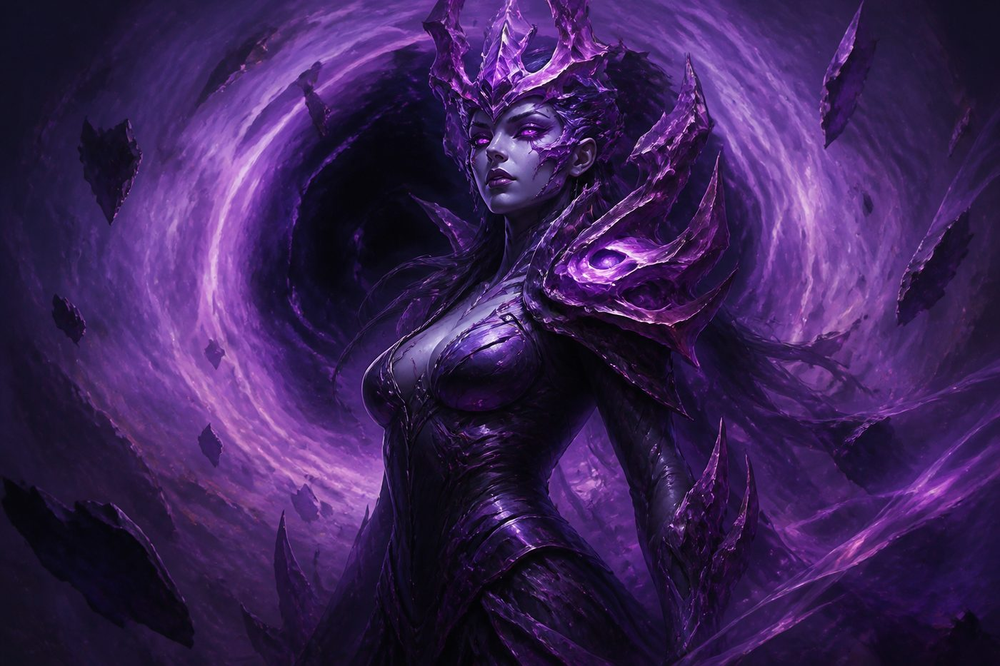
卡莎，虛空之女
Reaction — Exhaust: add 1 Power that may only be spent to play a spell, of any domain. Activate even on their turn. This is the engine: one extra spell pip every time it is ready.
×1 legend · not in the 40
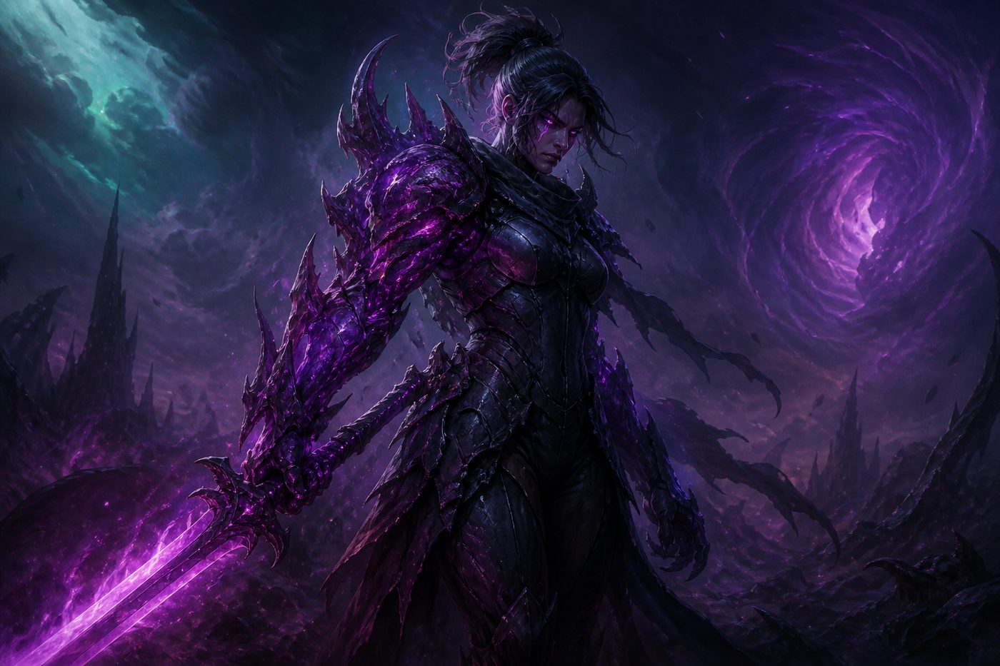
卡莎，倖存者
Accelerate — you may pay 1 Energy and 1 Fury Power as an additional cost to have her enter ready. When she conquers, draw 1. One copy starts in the Chosen Champion zone. Recast her after Retreat or a hold; do not idle her in base if a battlefield is empty.
×2 · 1 chosen, 1 in deck
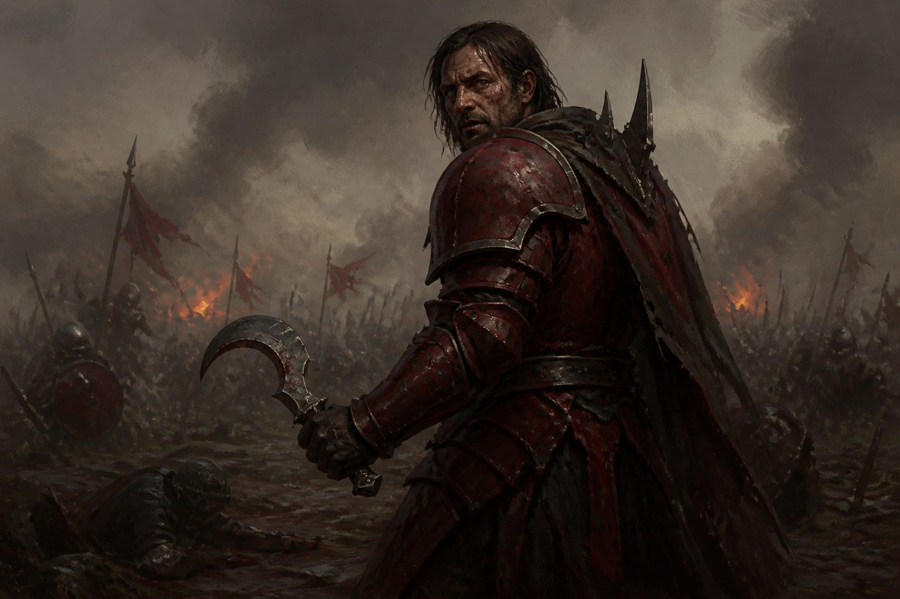
軍團後衛
Accelerate — pay 1 Energy and 1 Fury Power extra to enter ready. Turn-one or turn-two pressure when you need a body in a lane now. Fine to chump or Cleave.
×1
呸呸普羅
Deflect — opponents must pay extra Power to choose this with a spell or ability. Park it on a battlefield they want to ping. Back it with Cleave or Stupefy rather than spending your own targeted spells into it.
×1
拉文布魯姆學生
When you play a spell, give this +1 Might this turn. Keep Energy back on their turn so a Hextech Ray or Stupefy turns a 2-might body into a winning showdown. Premier keep in the opener.
×3
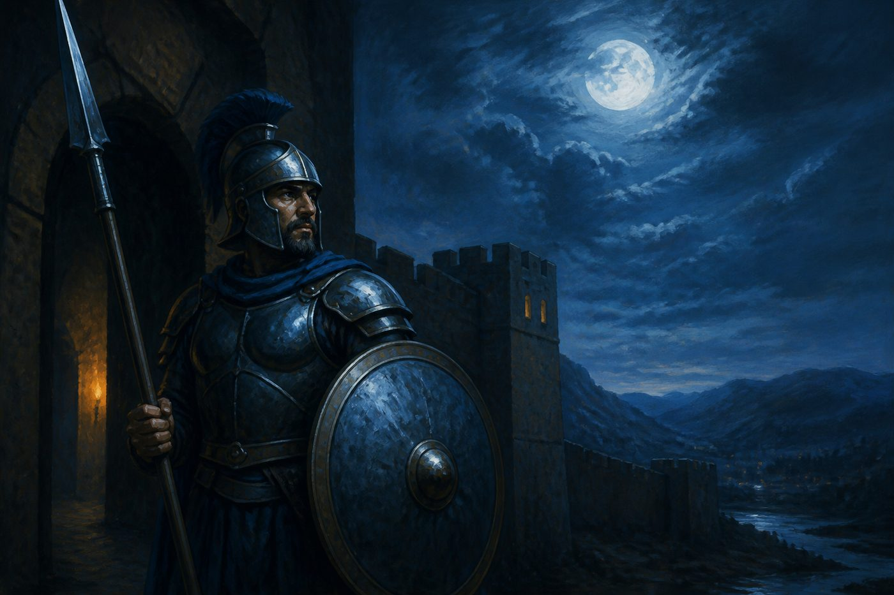
警覺哨兵
Deathknell — draw 1 when this dies. It is a 1-might placeholder that refunds a card. Use it to occupy a lane, soak, or force them to spend a spell and still give you the draw.
×3
約德爾教官
Tank — combat damage is assigned to this first. When you play it, draw 1. The body is small; the card and the Tank tag are why it is a three-of. Cleave it when you must steal a lane.
×3
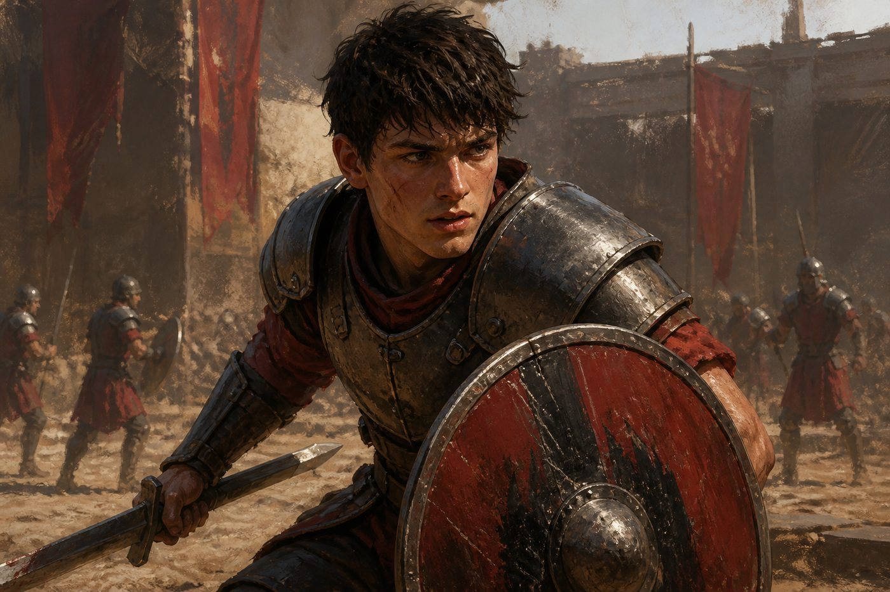
諾克薩斯新兵
Legion — this costs 2 less if you have already played another card this turn. Sequence: 1-cost spell, then Hopeful for 2 Energy as a 4-might threat. Same trigger window as Darius.
×3
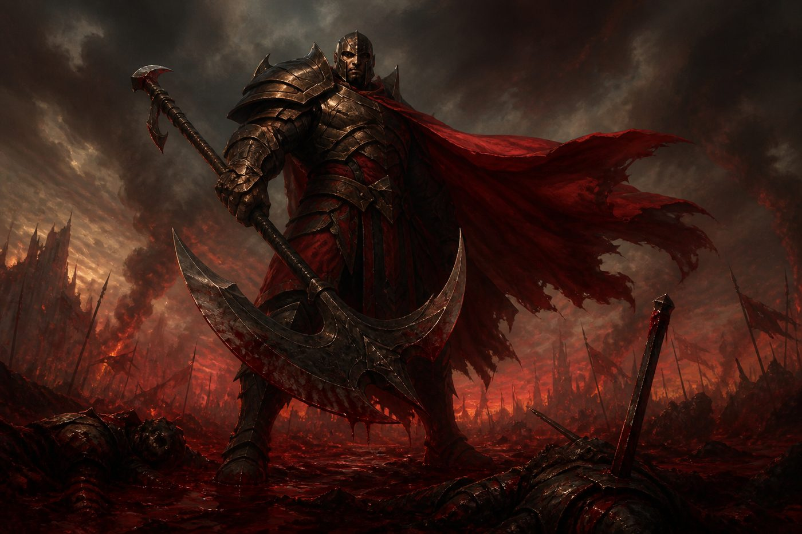
達瑞斯，三鐵衛
When you play your second card in a turn, give Darius +2 Might this turn and ready him. He enters exhausted unless that trigger hits. Pattern: Hextech Ray or Cleave, then Darius, conquer at 7. The +2 drops at end of turn; replay two cards on their turn if you need the pump on defense.
×3
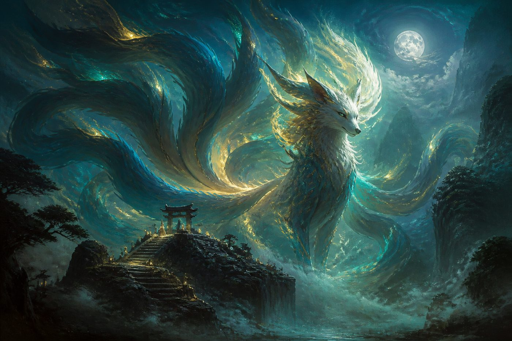
千尾監視者
Accelerate — 1 Energy and 1 Mind Power extra to enter ready. When you play this, enemy units get −3 Might this turn (minimum 1). The shrink lasts the rest of the turn, so a second attacker can take the other battlefield. This is the cleanest two-point turn in the list.
×3
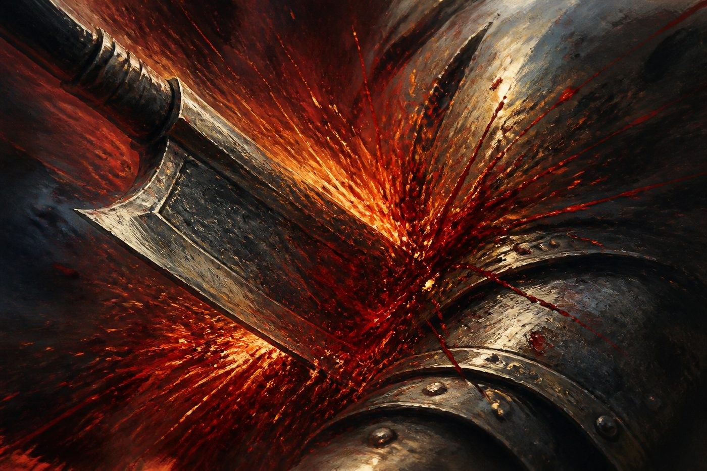
順劈
Play on your turn or in showdowns. Give a unit Assault 3 this turn (+3 Might while it is attacking). Turns Student, Poro, or Yordle into a real conquer. Also the cheapest way to trigger Legion / Darius.
×3
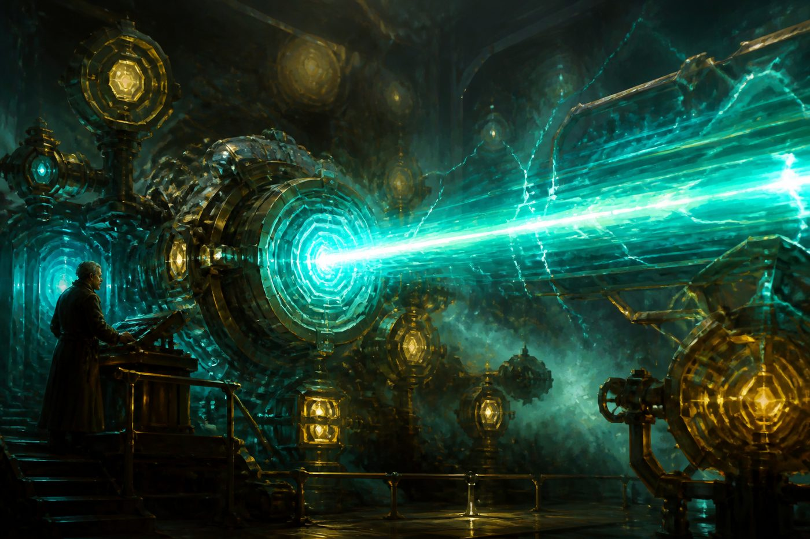
海克斯射線
Play on your turn or in showdowns. Deal 3 damage to a unit at a battlefield. Cannot snipe a unit sitting in base. Pay Fury Power; Kai'Sa's legend covers one Power. This is the default answer to 3-might openers.
×3
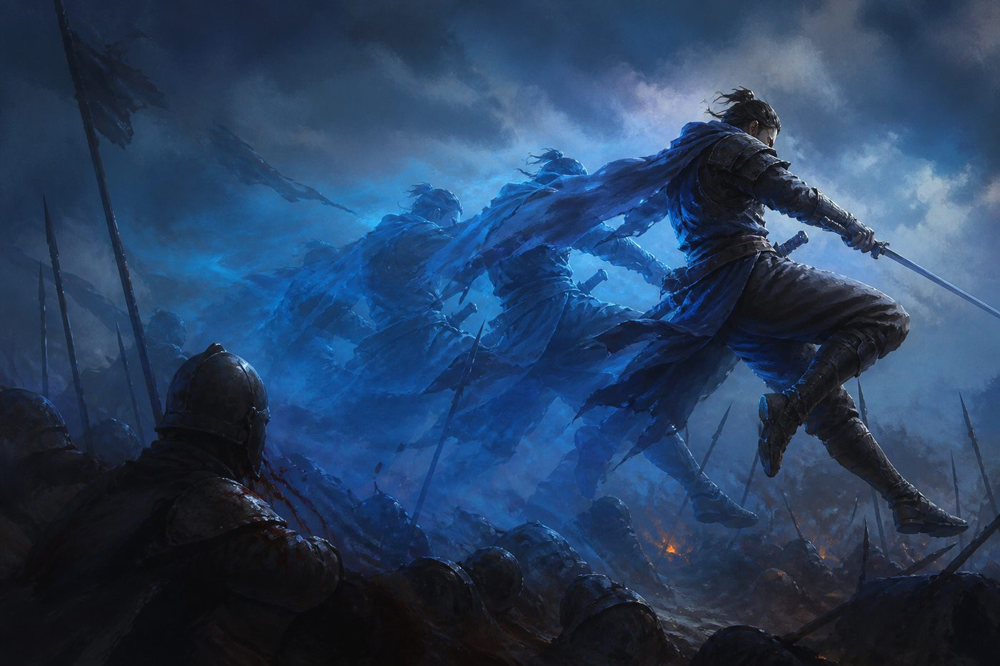
擇日再戰
Play any time, even before spells and abilities resolve. Return a friendly unit to its owner's hand. That owner channels 1 rune exhausted. Save Survivor from a losing showdown, jump a rune toward Watcher, and recast with Accelerate next turn.
×3
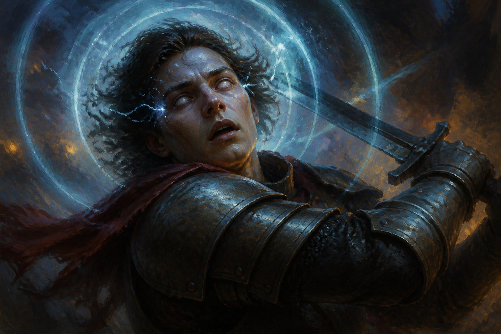
震懾
Play any time. Give a unit −1 Might this turn, to a minimum of 1. Draw 1. Cantrip combat trick. Tie a showdown, shrink a 4-might blocker, or Stupefy your own unit at Dreaming Tree to draw two.
×3
星落
Current errata: Deal 3 to a unit. Deal 3 to a unit. Split or stack (6 to one body). Hits units in base or at a battlefield. This is the answer to Deflect-light 6-might threats and to double 3-drops. Two extra copies complete the 40.
×3 · 2 added to reach 40
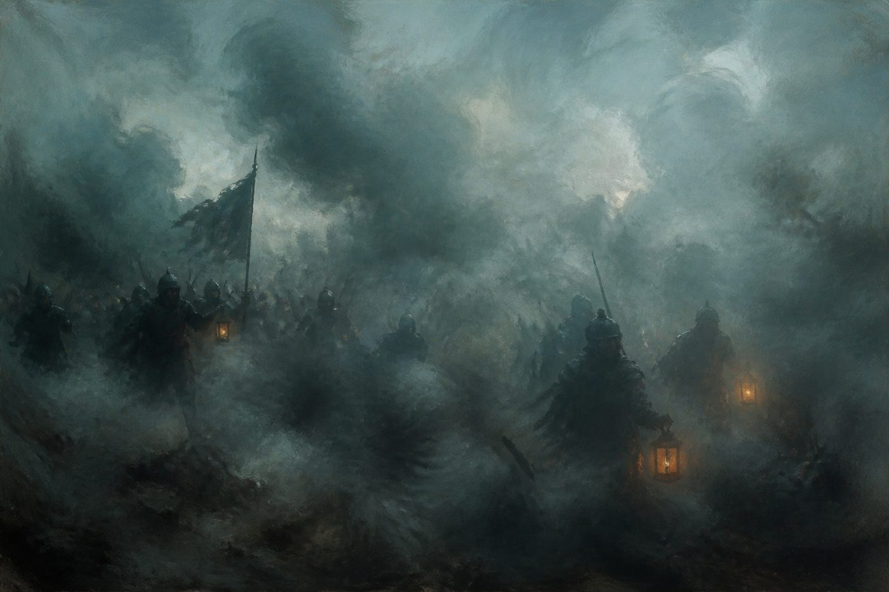
煙幕
Give a unit −4 Might this turn, minimum 1. Hide this for Master Yi bodies, Sett, and enemy Darius. Do not spend it on a 3-might unit Hextech Ray already kills.
×1
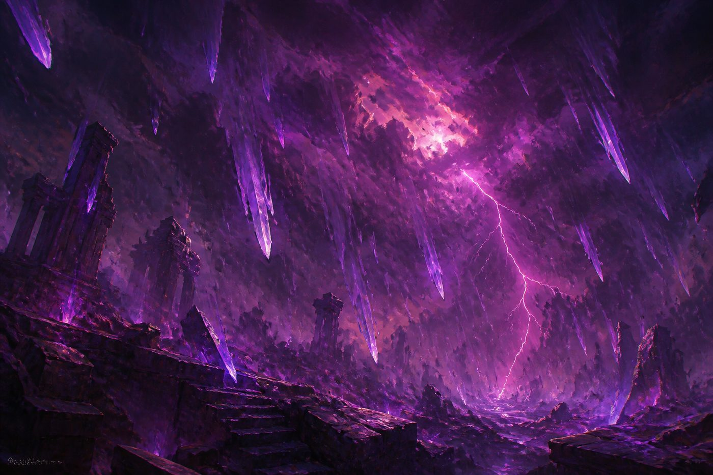
艾卡西亞暴雨
Errata: Deal 2 to a unit, six times. Split across the board or stack 12 onto one threat. Signature spell. Dual-domain Power. Wait until it actually resets the score, not when you are merely annoyed.
×1
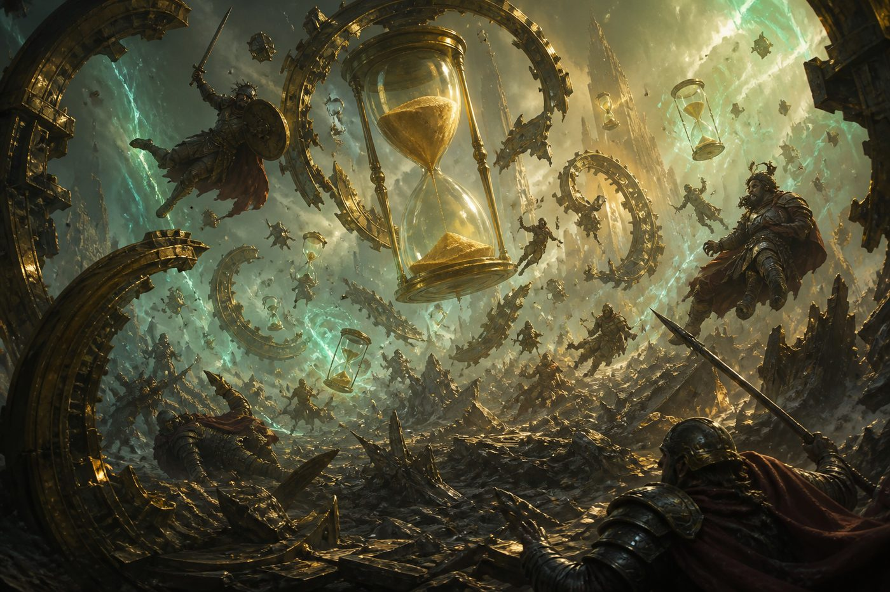
時間扭曲
Take a turn after this one. Banish this. Typical cost: 10 Energy and 4 Mind Power. Winning lines: holding two fields at 6 points, or conquering to 7 then Warping into a Hold for 8. Calm-domain Wind Wall / deny spells beat this — ask before you tap out.
×1
幻夢之樹
Value lane. Move a unit here, then target it with Stupefy, Cleave, or Retreat to draw. Do not donate this battlefield to a grind deck if you can help it.
×1 battlefield
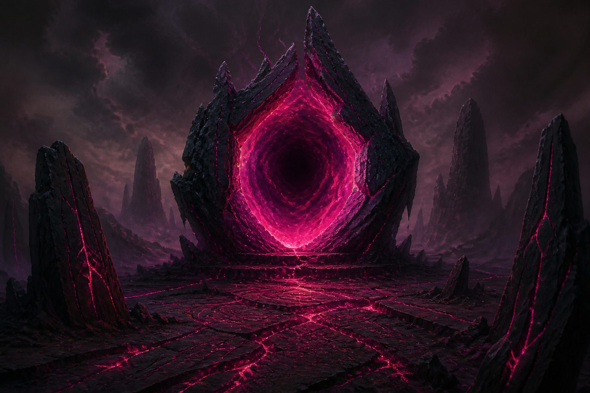
虛空之門
Your preferred combat lane. Boosts spell damage, so Hextech Ray and Falling Star start deleting real units. Contest this early against other spell decks.
×1 battlefield
祖安地道
Loot filter. Discard a spent 1-cost to find Watcher, Rain, or Warp. Fine to give up if the other two lanes score; do not die holding a loot field while they take both scoring lanes.
×1 battlefield
怎麼用這副牌贏瑞士輪
Kai'Sa is not a linear aggro deck and it is not a tap-out control deck. It is a spell-tempo deck: cheap Action and Reaction spells keep battlefields empty or skinny, small units convert those empty lanes into points, and then Darius, Watcher, or Time Warp ends the game before the opponent rebuilds.
Score to 8. You Hold during your beginning phase if you already control a battlefield, and you Conquer when you take one you have not scored this turn. The final point has extra rules: a Hold can win, but a Conquer for the last point only counts if you have scored every battlefield this turn. If you Conquer for point 8 without having scored the other field, you draw a card instead of winning. Learn that rule cold before Taiwan. Time Warp exists to turn a 6- or 7-point board into a Hold win they never get to answer.
Exhaust Kai'Sa, Daughter of the Void whenever you would otherwise recycle a rune to pay a spell's Power. That is almost every Hextech Ray, Falling Star, and Icathian Rain. If you forget the legend, you deramp and the deck feels clunky. If you remember it, you cast a spell most turns and still channel runes for tomorrow.
Leave Energy up on their turn. This list is full of Action and Reaction cards that only matter in showdowns. Tapping out to deploy a 4-might unit into an open lane is often correct; tapping out when they have a ready attacker on your field is how Kai'Sa loses to Master Yi and Annie.
起源環境要小心的對局
Taiwan's first month is Origins-legal product. The same legends that ran western and CN Origins events will show up at store-level Summoner Skirmish and at the September Regional Qualifier. Kai'Sa is a premier Origins legend. It still has losing and coin-flip pairings. Play those, do not ignore them.
| Legend | 繁中 | Role | Plan |
|---|---|---|---|
| Master Yi | 易大師 | Worst regular pairing. Wuju tempo-defense out-sizes cheap pings and contests both lanes. | Do not empty both fields. Smoke Screen and Falling Star are for his mid-might attackers, not for their 2-drops. Watcher shrink is the clean swing. If they sit behind Tank units, Cleave a second attacker instead of Ray-ing into Tank. Never Time Warp into a board they will Hold-kill; Warp only when a Hold wins on the extra turn. |
| Viktor | 維克特 | Gear grind. Recycles value, clogs lanes with bodies your 3-damage spells do not finish. | Kill the gear plan early if you own Thermo Beam in the board. Otherwise punch points now. Do not play a long game of 1-for-1s. Hopeful and Accelerated Survivor force him off fields. Rain is actually good here if he swarms small units. Side in extra Falling Star / Smoke if you have them. |
| Annie | 安妮 | Explosive early. Can race you before Watcher comes online. | Keep Ray and Stupefy. Block her first conquer. Do not greed Dreaming Tree draws on turn two. A clunky opener vs Annie is a lost match. After you stabilize, you are favored — she runs out of gas, you do not. |
| Kai'Sa mirror | 卡莎鏡像 | Same tools. Sequencing and Survivor timing decide it. | Void Gate is the most important battlefield. Do not be the first to tap out of Reactions. Winner is whoever gets a ready Survivor conquer plus a card, then Retreats out of the swing-back. Hold Smoke Screen for their Darius or Watcher, not their Sentry. |
| Darius / Sett | 達瑞斯 / 賽特 | Fat midrange. Sett walls; enemy Darius uses your own Legion trick. | Falling Star stacked (6) or Smoke Screen −4. Do not Cleave into a bigger ready body. Watcher is excellent. You are generally favored if you do not donate free conquers on turn two. |
| Jinx, Lee Sin, Ahri, Volibear | 吉茵珂絲、李星、阿璃、弗力貝爾 | Origins data had them below the S-tier pair. Still capable of stealing games. | Play the main plan. Vs Jinx, respect wide boards and save Rain. Vs Lee Sin, do not walk Survivor into a ready monk without a Reaction. Vs Ahri, they can score without a clean Hold — race. Vs Volibear, Warp is live if they spend the first four turns ramping. |
| Miss Fortune / Teemo | 好運姐 / 提摩 | Trick and tempo. Less common, high variance. | Do not overcommit into hidden combat tricks. Keep one Reaction. Take points when lanes are truly empty. |
第一次打台灣賽要帶什麼、先搞懂什麼
English and Traditional Chinese cards are mix-legal, same idea as other TCGs. Bring whichever printings you have. Judges in Taiwan will still expect you to know what your English cards do in Chinese if an opponent asks.
You do not need a perfect 8 before your first Skirmish. You do need the 40 to be legal and sleeved.
賽前必練 · 規則比記錯卡還容易把你淘汰
Community pointers: 符文戰場編年史 for Taiwan stores and Chinese names; official organized play at playriftbound.com; GLORIOUS SOUL for Traditional Chinese product.